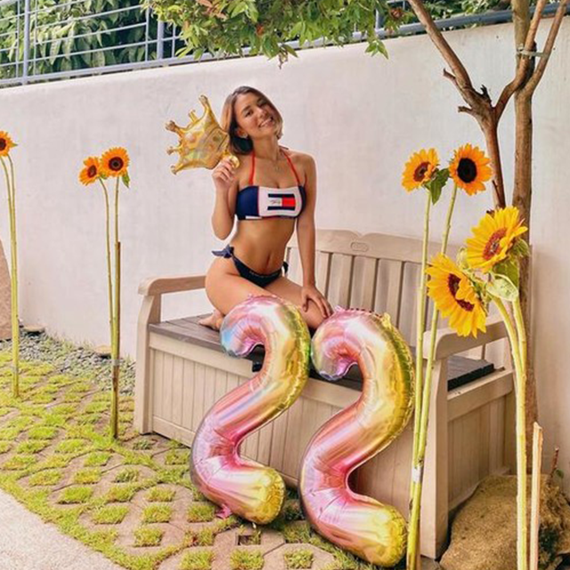
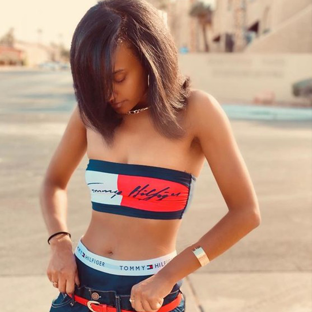

girls'
night in
Powergirl Candace Reels maakt zich klaar om de feestdagen te vieren met de vrouwen waar ze van houdt - scoor haar stijl voor je eigen soiree.
shop holiday looksShop per categorie


hilfiger
collection
Varsity meets rock 'n roll: studded leer geeft attitude aan verfijnde jurken, in rijke stoffen en nieuwe silhoutten.
shop de collectie shop jassen en jacks

meer categorieën
Jouw @TommyHilfiger stijl
Deel je beste Tommy Hilfiger stijl met #tommyhilfiger, tag ons @tommyhilfiger en maak kans op een vermelding.
- 
- 
Powered by Olapic
Tommy Hilfiger dames
Ontdek de nieuwste looks in de collecties dameskleding, schoenen, tassen en accessoires van Tommy Hilfiger. Met de Tommy Hilfiger collectie van dit seizoen zit je goed, of je nu shopt voor een glamoureus evenement, je volgende festival of een avondje uit. Ons aanbod met damesjurken bevat opvallende stijlen met felbegeerde zwarte jurken, skaterjurken en avondjurken met pailletten. Ga voor klassiek met een poloshirt voor dames of bekijk onze Tommy Sport collectie met luxe trainingsbroeken, T-shirts en hoodies, waarmee je jouw look gemakkelijk van een straatwaardige look naar een look die geschikt is voor de sportschool kunt omtoveren.
Onze collectie damesschoenen bevat instappers en brogues van kwaliteitsvol leer, strakke platte schoenen waarmee je in stijl een statement maakt en enkellaarsjes in de nieuwste stijlen. Ontdek onze “nieuw”-sectie om de nieuwste items te bekijken of bekijk onze sale om chique musthaves, nog voordat ze uitverkocht zijn, te shoppen. Tommy Hilfiger voor dames is de eerste bestemming om een statement outfit te shoppen, wat je stijl ook is.